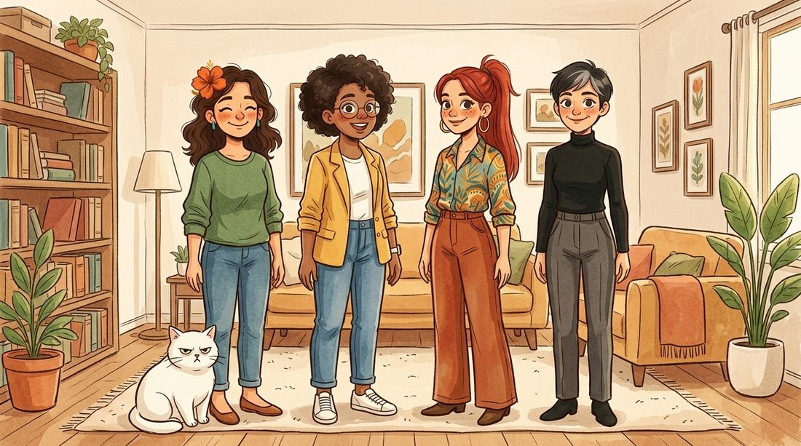

A turma
Ninguém aqui é perfeito. Ainda bem.

Clara
34 anos, tentando desacelerar. Gentil, ri de si mesma e cai da postura da árvore com frequência. Neta de uma nonna italiana que dizia “piano, piano”. Não sabe dizer não para bolo.
Biscoito
O gato. Gordo, branco e de olhar julgador. Dorme 16 horas por dia, nunca pediu desculpas e é o revisor oficial do livro de colorir (dorme em cima das páginas).
Yas
A melhor amiga desde a escola. Organiza tudo para todo mundo e mede a vida em passos, metas e e-mails respondidos. Está aprendendo que descanso não é falha.
Lara
Caótica, divertida e sincera demais. Acredita em vídeo de 15 segundos com muita convicção, mas não é boba: só confia demais. Manda áudio de quatro minutos.
Tina
A cética. Inteligente, irônica e alérgica a mito de internet. Diz que bem-estar é marketing, mas é a primeira a perguntar se você precisa de alguma coisa.
A vizinhança (só no blog)
Nas crônicas aparece muita gente que você não vê nas redes. Algumas pessoas voltam sempre.
Dona Zuleide
A vizinha do 302. 78 anos, cabelo branco preso com um lápis, sinceridade sem filtro. Escolhe tomate e analisa a cara dos outros com o mesmo rigor. Faz a melhor canja do prédio.
Seu Ademir
Dono da banca da esquina da praça desde 1991. Prevê o tempo pelo joelho e acerta mais que o aplicativo. Tem uma neta que estuda veterinária e um time que a Clara prefere não citar.
A mãe da Clara
Liga para perguntar se ela está comendo direito e acredita que seis laranjas resolvem qualquer coisa. Ama em forma de pergunta.